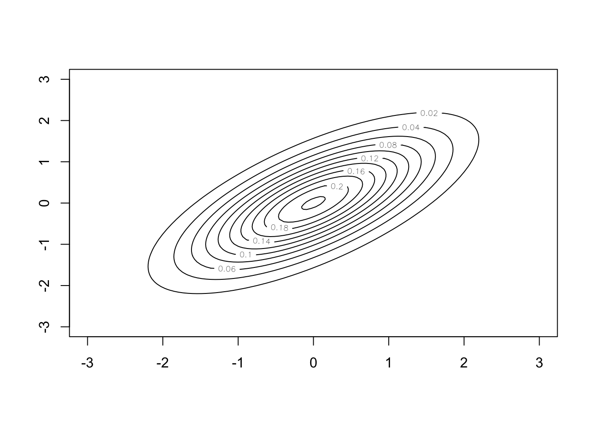

Chapter 1 Fundamentals of Bayesian Inference
Bayesian inference is built on a different way of thinking about parameters of probability distributions than methods you have learnt so far. In the past 30 years or so, Bayesian inference has become much more popular. This is partly due to increased computational power becoming available. In this first chapter, we are going to set out to answer:
What are the fundamental principles of Bayesian inference?
What makes Bayesian inference different from other methods?
1.1 Statistical Inference
The purpose of statistical inference is to “draw conclusions, from numerical data, about quantities that are not observed” (Bayesian Data Analysis, chapter 1). Generally speaking, there are two kinds of inference:
- Inference for quantities that are unobserved or haven’t happened yet. Examples of this might be the size of a payout an insurance company has to make, or a patients outcome in a clinical trial had they been received a certain treatment.
- Inference for quantities that are not possible to observe. This is usual because they are part of modelling process, like parameters in a linear model.
In this module, we are going to look at a different way of carrying out statistical inference, one that doesn’t depend on long run events. Instead, we’re going to introduce the definition of probability that allows us to interpret the subjective chance that an event occurs.
1.2 Frequentist Theory
Frequentist probability is built upon the theory on long run events. Probabilities must be interpretable as frequencies over multiple repetitions of the experiment that is being analysed, and are calculated from the sampling distributions of measured quantities.
Definition 1.1 The long run relative frequency of an event is the probability of that event.
Example 1.1 If a frequentist wanted to assign a probability to rolling a 6 on a particular dice, then they would roll the dice a large number of times and compute the relative frequency.
Definition 1.2 The sampling distribution of a statistic is the distribution based on a long run of samples of a fixed size from the population.
The sampling distribution is an important concept in frequentist theory as it describes the randomness in the process. From a frequentist standpoint, we have a model containing some parameter \(\theta\) and some data \(\boldsymbol{y}\). All the evidence in the data \(\boldsymbol{y}\) about \(\theta\) is contained in the likelihood function \(\pi(\boldsymbol{y} \mid \theta)\). The parameter \(\theta\) is fixed and the likelihood function describes the probability of observing the data \(\boldsymbol{y}\) given the parameter \(\theta\).
The most common way to estimate the value of \(\theta\) is using maximum likelihood estimation. Although other methods do exist (e.g. method of moments, or generalised maximum likelihood estimation).
Definition 1.3 The maximum likelihood estimate of \(\theta\), \(\hat{\theta}\), is the value such that \(\hat{\theta} = \max_{\theta} \pi(\boldsymbol{y} \mid \boldsymbol{y})\).
Uncertainty around the maximum likelihood estimate is based on the theory of long running events that underpin frequentist theory.
Definition 1.4 Let \(X\) be a random sample from a probability distribution \(\theta\). A \(100(1-\alpha)\%\) confidence interval for \(\theta\) is an interval \((u(Y), v(Y))\) such that \[ \mathbb{P}(u(Y) < \theta < v(Y)) = 1-\alpha \]
This means that if you had an infinite number of samples for \(Y\) and the corresponding infinite number of confidence intervals, then \(100(1-\alpha)\)% of them would contain the true value of \(\theta\). It does not mean that there is a \(100(1-\alpha)\) probability a particular interval contains the true value of \(\theta\).
Given that we want to understand the properties of \(\theta\) given the data we have observed \(\boldsymbol{y}\), then you might think it makes sense to investigate the distribution \(\pi(\theta \mid \boldymbold{y})\). This distribution says what are the likely values of \(\theta\) given the information we have observed from the data \(\boldsmybol{y}\). We will talk about Bayes’ theorem in more detail later on in this chapter, but, for now, we will use it to write down this distribution \[ \pi(\theta \mid \boldsymbol{y}) = \frac{\pi(\boldsymbol{y} \mid \theta)\pi(\theta)}{\pi(\boldsymbol{y})}. \] This is where frequentist theory cannot help us, particularly the term \(\pi(\theta)\). Randomness can only come from the data, so how can we assign a probability distribution to a constant \(\theta\)? The term \(\pi(\theta)\) is meaningless under this philosophy. Instead, we turn to a different philosophy where we can assign a probability distribution to \(\theta\).
1.3 Bayesian Probability
The Bayesian paradigm is built around a different definition of probability. This allows us to generate probability distirbutuions for parameters values.
Definition 1.5 The subjective belief of an event is the probability of that event.
This definition means we can assign probabilities to events that frequentists do not recognise as valid.
Example 1.2 Consider the following:
The probability that I vote for the labour party at the next election
A photo taken from the James Watt telescope contains a new planet.
The real identify of Banksy is Robin Gunningham.
These are not events that can be repeated in the long run.
1.4 Conditional Probability and Exchangability
Before we derive Bayes’ theorem, we recap some important definitions in probability.
Definition 1.6 Given two events \(A\) and \(B\), the conditional probability that event \(A\) occurs given the event \(B\) has already occurred is \[ \pi(A \mid B) = \frac{\pi(A \cap B)}{\pi(B)}, \] when \(\pi(B) > 0\).
Definition 1.7 Two events \(A\) and \(B\) are independent given event \(C\) if and only if \[ \pi(A \cap B \mid C) = \pi(A \mid C)\pi(B \mid C).\]
Definition 1.8 Let \(\pi(y_1, \ldots, y_N)\) be the joint density of \(Y_1, \ldots, Y_N\). If \(\pi(y_1, \ldots, y_N) = \pi(y_{\pi_1}, \ldots, y_{\pi_N})\) for a permutations \(\pi\) of \(\{1, \ldots, N\}\), then \(Y_1, \ldots, Y_N\) are exchangeable.
Exchangability means that the labels of the random variables don’t contain any information about the outcomes. This is an important idea in many areas of probability and statistics, and we often model exchangeable events as iid.
Example 1.3 If \(Y_i \sim Bin(n, p)\) are independent and identically distributed for \(i = 1, 2, 3\), then \(\pi(Y_1, Y_2, Y_3) = \pi(Y_3, Y_1, Y_2)\).
Example 1.4 Let \((X, Y)\) follow a bivariate normal distribution with mean 0, variances \(\sigma_x = \sigma_y = 1\) and a correlation parameter \(\rho \in [-1, 1]\). \((X, Y)\) are exchangable, but only independent if \(\rho = 0\).
Proposition 1.1 If \(\theta \sim \pi(\theta)\) and \((Y_1, \ldots, Y_N)\) from a sample space \(\mathcal{Y}\) are conditionally iid given some parameter \(\theta\), then marginally \(Y_1, \ldots, Y_N\) are exchangable.
Proof. Suppose \((Y_1, \ldots, Y_N)\) are conditionally iid given some parameter \(\theta\). Then for any permutation \(\pi\) of \(\{1, \ldots, N\}\) and observations \(\{y_1, \ldots, y_N\}\) \[\begin{equation} \begin{split} \pi(y_1, \ldots, y_N) &= \int \pi(y_1, \ldots, y_N \mid \theta) \pi(\theta)\, d\theta \qquad \textrm{(definition of marginal distribution)}\\ & = \int \left\{\prod_{i=1}^N\pi(y_i \mid \theta)\right\} \pi(\theta)\, d\theta \qquad \textrm{(definition of conditionally iid)}\\ & = \int \left\{\prod_{i=1}^N\pi(y_{\pi_i} \mid \theta)\right\} \pi(\theta)\, d\theta \qquad \textrm{(product is commutative)} \\ & = \pi(y_{\pi_1}, \ldots, y_{\pi_N}) \qquad \textrm{(definition of marginal distribution)} \end{split} \end{equation}\]
This tells us that if we have some conditionally iid random variables and a subjective prior belief about some parameter \(\theta\), then we have exchangeability. This is nice to have, but the implication in the other direction is much more interesting and powerful.
Theorem 1.1 (de Finetti) If a sequence of random variables \((Y_1, \ldots, Y_N)\) from a sample space \(\mathcal{Y}\) is exchangeable, then its joint distribution can be written as \[ \pi(y_1, \ldots, y_N) = \int \left\{\prod_{i=1}^N\pi(y_i \mid \theta)\right\} \pi(\theta)\, d\theta \] for some parameter \(\theta\), some distribution on \(\theta\), and some sampling model \(\pi(y_i \mid \theta)\).
This is a kind of existence theorem for Bayesian inference. It says that if we have exchangeable random varibales, then a parameter \(\theta\) must exist and a subjective probability distribution \(\pi(\theta)\) must also exist. The argument against Bayesian inference is that it doesn’t guarantee a good subjective probability distribution \(\pi(\theta)\) exists.
1.5 Bayes’ Theorem
Now we have an understanding of conditional probability and exchangeability, we can put these two together to understand Bayes’ Theorem. Bayes’ theorem is concerned with the distribution of the parameter \(\theta\) given some observed data \(y\). It tries to answer the question: what does the data tell us about the model parameters?
Theorem 1.2 (Bayes) The distribution of the model parameter \(\theta\) given the data \(y\) is \[ \pi(\theta \mid y) = \frac{\pi(y \mid \theta)\pi(\theta)}{\pi(y)} \]
Proof. \[\begin{align} \pi(\theta \mid y) &= \frac{\pi(\theta, y)}{\pi(y)}\\ \implies \pi(\theta, y) &= \pi(\theta \mid y)\pi(y) \end{align}\] Analogously, using \(\pi(y \mid \theta)\) we can derive \[ \pi(\theta, y) = \pi(y \mid \theta)\pi(\theta) \] Putting these two terms equal to each other and dividing by \(\pi(y)\) gives \[ \pi(\theta \mid y) = \frac{\pi(y \mid \theta)\pi(\theta)}{\pi(y)} \]
There are four terms in Bayes’ theorem:
- The posterior distribution \(\pi(\theta \mid y)\). This tells us our belief about the model parameter \(\theta\) given the data we have observed \(y\).
- The likelihood function \(\pi(y \mid \theta)\). The likelihood function is common to both frequentist and Bayesian methods. By the likelihood principle, the likelihood function contains all the information the data can tell us about the model parameter \(\theta\).
- The prior distribution \(\pi(\theta)\). This is the distribution that describes our prior beliefs about the value of \(\theta\). The form of \(\theta\) should be decided before we see the data. It may be a vague distribution (e.g. \(\theta \sim N(0, 10^2)\)) or a specific distribution based on prior information from experts (e.g. \(\theta \sim N(5.5, 1.3^2)\)).
- The evidence of the data \(\pi(y)\). This is sometimes called the average probability of the data or the marginal likelihood. In practice, we do not need to derive this term as it can be back computed to ensure the posterior distribution sums/integrates to one.
A consequence of point four is that posterior distributions are usually derived proportionally, and (up to proportionality) Bayes’ theorem \[ \pi(\theta \mid y) \propto \pi(y\mid\theta)\pi(\theta). \]
Some history of Thomas Bayes. Thomas Bayes was an English theologean born in 1702. His “Essay towards solving a problem in the doctrine of chances” was published posthumously. It introduces theroems on conditional probability and the idea of prior probability. He discusses an experiment where the data can be modelled using the Binomial distribution and he guesses (places a prior distribution) on the probability of success.
Richard Price sent Bayes’ work to the Royal Society two years after Bayes had died. In his commentary on Bayes’ work, he suggested that the Bayesian way of thinking proves the existance of God, stating: The purpose I mean is, to show what reason we have for believing that there are in the constitution of things fixt laws according to which things happen, and that, therefore, the frame of the world must be the effect of the wisdom and power of an intelligent cause; and thus to confirm the argument taken from final causes for the existence of the Deity.
It’s not clear how Bayesian Thomas Bayes actually was, as his work was mainly about specific forms of probability theory and not his intepretation of it. The Bayesian way of thinking was really popularised by Laplace, who wrote about deductive probability in the early 19th century.

Figure 1.1: Probably not Thomas Bayes, but the best we have got. Courtesy of Wikipedia https://en.wikipedia.org/wiki/Thomas_Bayes.
Example 1.5 We finish this chapter with a very simple example. The advantage of the example being so simple is that we can obtain plots in R that show what’s going on.
Suppose we have a model \(y \sim N(\theta, 1)\) and we want to estimate \(\theta\). To do this we need to derive the posterior distribution. By Bayes’ theorem, \[ \pi(\theta \mid y) \propto \pi(y \mid \theta) \pi(\theta). \] We know the form of \(\pi(y \mid \theta) = \frac{1}{\sqrt{2\pi}}e^{-\frac{1}{2}(y - \theta)^2}\), but how should we describe our prior beliefs about \(\theta\)? Here are three options:
We can be very vague about \(\theta\) – we genuinely don’t know about its value. We assign a uniform prior distribution to \(\theta\) that takes values between -1,000 and +1,000, i.e. \(\theta \sim u[-1000, 1000]\). Up to proportionality \(\pi(\theta) \propto 1\) for \(\theta \in [-1000, 1000]\).
After thinking hard about the problem, or talking to an expert, we decide that the only thing we know about \(\theta\) is that it can’t be negative. We adjust our prior distribution from 1. to be \(\theta \sim u[0, 1000]\). Up to proportionality \(\pi(\theta) \propto 1\) for \(\theta \in [0, 1000]\).
We decide to talk to a series of experts about \(\theta\) asking for their views on likely values of \(\theta\). Averaging the experts opinions gives \(\theta \sim N(3, 0.7^2)\). This is a method known as prior elicitation.
We now go and observe some data. After a lot of time and effort, we collect one data point – \(y = 0\).
Now we have all the ingredients to construct the posterior distribution. We multiply the likelihood function evaluated at \(y = 0\) by each of the three prior distributions. This gives us the posterior distributions (up to proportionality).
#The likelihood function is the normal PDF
#To illustrate this, we evaluate this from [-5, 5].
x <- seq(-5, 5, 0.01)
likelihood <- dnorm(x, mean = 0, sd = 1)
#The first prior distribution we try is a
#uniform [-1000, 1000] distribution. This is a
#vague prior distribution.
uniform.prior <- rep(1, length(x))
posterior1 <- likelihood*uniform.prior
#The second prior distribution we try is a uniform
#[0, 1000] distribution, i.e. theta is non-negative.
step.prior <- ifelse(x >= 0, 1, 0)
posterior2 <- likelihood*step.prior
#The third prior distribution we try is a
#specific normal prior distribution. It
#has mean 3 and variance 0.7.
normal.prior <- dnorm(x, mean = 3, sd = 0.7)
posterior3 <- likelihood*normal.prior
#Now we plot the likelihoods, prior and posterior distributions.
#Each row corresponds to a different prior distribution. Each
#column corresponds to a part in Bayes' theorem.
par(mfrow = c(3, 3))
plot(x, likelihood, type = 'l', xlab = "", ylab = "", yaxt = "n", main = "Likelihood")
plot(x, uniform.prior, type = 'l', yaxt = "n", xlab = "", ylab = "", main = "Prior")
plot(x, posterior1, type = 'l', yaxt = "n", xlab = "", ylab = "", main = "Posterior")
plot(x, likelihood, type = 'l', xlab = "", ylab = "", yaxt = "n")
plot(x, step.prior, type = 'l', yaxt = "n", xlab = "", ylab = "")
plot(x, posterior2, type = 'l', yaxt = "n", xlab = "", ylab = "")
plot(x, likelihood, type = 'l', xlab = "", ylab = "", yaxt = "n")
plot(x, normal.prior, type = 'l', yaxt = "n", xlab = "", ylab = "")
plot(x, posterior3, type = 'l', yaxt = "n", xlab = "", ylab = "")
The posterior distribution is proportional to the likelihood function. The prior distribution closely matches frequentist inference. Both the MLE and posterior mean are 0.
We get a lopsided posterior distribution, that is proportional to the likelihood function for positive values of \(\theta\), but is 0 for negative values of \(\theta\).
We get some sort of average of the likelihood function and the prior distribution. Had we collected more data, the posterior distribution would have been weighted toward the information from the likelihood function more.
1.6 Exercises
Exercise 1.1 Consider a standard pack of 52 playing cards. You pick a card at random, what is the probability you pick:
- A Queen, given you have picked a picture card (King, Queen, Jack)?
- The five of clubs, given you have picked a black card?
- A black card, given you have not picked the five of clubs?
Solution. A pack of playing cards is equally divided into four suits: Hearts (red), Diamonds (red), Clubs (black), and Spades (black). Each suit has 13 cards numbered 2 - 10, Jack, Queen, King (all three picture cards), and Ace.
- \[\begin{align*} P(\hbox{Queen} \mid \hbox{Picture}) &= \frac{P(\hbox{Queen and Picture})}{P(\hbox{Picture)}} \\ & = \frac{4/52}{12/52} \\ & = \frac{1}{3}. \end{align*}\]
- \[\begin{align*} P(\hbox{5 Clubs} \mid \hbox{Black}) &= \frac{P(\hbox{5 Clubs and Black})}{P(\hbox{Black)}} \\ & = \frac{1/52}{1/2} \\ & = \frac{1}{26}. \end{align*}\]
- \[\begin{align*} P(\hbox{Black} \mid \hbox{Not 5 Clubs}) & = \frac{P(\hbox{Black} \mid \hbox{Not 5 Clubs})}{P(\hbox{Not 5 Clubs})} \\ & = \frac{25/52}{51/52}\\ &= \frac{25}{51}. \end{align*}\]
Exercise 1.2 Decide if each of the following events can be assigned probabilities by frequentists:
- The Bermuda triangle exists.
- Getting a 6 when rolling a dice.
- Someone will test positive for Covid-19 after contracting the disease.
- The sun will rise tomorrow.
Solution.
- No, this can’t be assigned a probability.
- Yes, you can repeatedly roll of dice.
- Yes, this can be assigned a probability. You can repeatedly test someone for the disease, hence there is a long-run frequency of the test returning a positive result.
- It depends what you mean by tomorrow. Suppose today is 1st January 2023, if tomorrow means 2nd January 2023, then no. 2nd January 2023 will on occur once and there is no long-run frequency. If, however, you define tomorrow by the day after today, then yes. There have been many (The Earth has been going round the Sun for ~4.5 billion years, so approximately 4.5*365 tomorrows), so it can be assigned a probability.
Exercise 1.3 An urn contains three coins. Two of the coins are fair, but one of the coins has heads on both sides.
- You pick a coin out of the urn without looking and flip it. What’s the probability you get heads?
- You pick a coin out of the urn without looking and flip it and get heads. What’s the probability it’s the two-headed coin?
Solution. Label the coins 1, 2, 3, where \(P(\hbox{Heads} \mid \hbox{Coin } 1) = P(\hbox{Heads} \mid \hbox{Coin } 2) = \frac{1}{2}\) and \(P(\hbox{Heads} \mid \hbox{Coin } 3) = 1\).
Using the law of total probability \[\begin{align*} P(\hbox{Heads}) & = P(\hbox{Heads} \mid \hbox{Coin } 1) P(\hbox{Coin } 1) + \\ & \qquad P(\hbox{Heads} \mid \hbox{Coin } 2) P(\hbox{Coin } 2) + P(\hbox{Heads} \mid \hbox{Coin } 3) P(\hbox{Coin } 3) \\ & = \frac{1}{2}\cdot\frac{1}{3} + \frac{1}{2}\cdot\frac{1}{3} + 1\cdot\frac{1}{3} \\ & = \frac{2}{3}. \end{align*}\]
Using Bayes’ theorem \[\begin{align*} P(\hbox{Coin 1}\mid \hbox{Heads}) &= \frac{P(\hbox{Heads} \mid \hbox{Coin 1})P(\hbox{Coin 1})}{P(\hbox{Heads})} \\ & = \frac{1\cdot\frac{1}{3}}{\frac{2}{3}} \\ & = \frac{1}{2}. \end{align*}\]
Exercise 1.4 You see a sponsored post online with the word bitcoin in. You want to work out the probability the post is spam.
- Using the law of total probability, show the probability the post is spam, given it contains the word probability is \[ \pi(\textrm{spam} \mid \textrm{bitcoin}) = \frac{\pi(\textrm{bitcoin} \mid \textrm{spam})\pi(\textrm{spam})}{\pi(\textrm{bitcoin} \mid \textrm{spam})\pi(\textrm{spam}) + \pi(\textrm{bitcoin} \mid \textrm{not spam})\pi(\textrm{not spam})} \]
- Most spam filters take a naive approach and set \[ \pi(\textrm{spam}) =\pi(\textrm{not spam}) = \frac{1}{2}. \] If an post is known to be spam, there’s an 80% chance it contains the word bitcoin. If an post is not spam, then there’s a 1% chance it contains the word bitcoin. Calculate the probability the post is spam given it contains bitcoin.
- Suppose you take a much more pessimistic view, and assume that 80% of all sponsered posts are spam. Recalculate the probability the post is spam given it contains bitcoin.
Solution. By Bayes’ theorem, we have \[ \pi(\textrm{spam} \mid \textrm{bitcoin}) = \frac{\pi(\textrm{bitcoin} \mid \textrm{spam})\pi(\textrm{spam})}{\pi(\textrm{bitcoin})}. \] 1. By the law of total probability, \[ \pi(\textrm{bitcoin}) = \pi(\textrm{bitcoin} \mid \textrm{spam})\pi(\textrm{spam}) + \pi(\textrm{bitcoin} \mid \textrm{not spam})\pi(\textrm{not spam}). \] Thus, \[ \pi(\textrm{spam} \mid \textrm{bitcoin}) = \frac{\pi(\textrm{bitcoin} \mid \textrm{spam})\pi(\textrm{spam})}{\pi(\textrm{bitcoin} \mid \textrm{spam})\pi(\textrm{spam}) + \pi(\textrm{bitcoin} \mid \textrm{not spam})\pi(\textrm{not spam})} \]
- From the question, we have \(\pi(\textrm{spam}) =\pi(\textrm{not spam}) = \frac{1}{2}\), \(\pi(\textrm{bitcoin} \mid \textrm{spam}) = 0.8\) and \(\pi(\textrm{bitcoin} \mid \textrm{not spam}) = 0.01\). Plugging these into the probability gives \[ \pi(\textrm{spam} \mid \textrm{bitcoin}) = \frac{80}{81} \approx 98.7\%. \]
- This time \(\pi(\textrm{spam}) = 0.8\) and \(\pi(\textrm{not spam}) = 0.2\), which yields \[ \pi(\textrm{spam} \mid \textrm{bitcoin}) = \frac{320}{321} \approx 99.7\%. \]
Exercise 1.5 You are working on a project investigating pollution related illnesses in the West Midlands. I have sampled the proportion of people with pollution related illnesses in five areas of the West Midlands, \(y_1, \ldots, y_5\), with nothing to distinguish the data. This exercise is about the last data point \(y_5\).
- Should you model these data points exchangeably?
- I now tell you the first four of these rates (0.72, 1.00, 0.85, 0.78 per 100,000). Should you continue to model these data points exchangeably?
- Now, suppose instead of telling you these four rates, I had told you the five areas I have information about are Birmingham City Centre, Smethwick, Edgbaston, Dorridge, and Sutton Coldfield. Should you continue to model these data points exchangeably?
- Now suppose I give you the data in part 2 and say that the missing data point \(y_5\) is Birmingham City Centre. Should you continue to model these data points exchangeably?
Solution. This is based on Gelman et. al (2013, p. 105).
- Yes, you have no information to distinguish the data points so exchangability seems a reasonable assumption.
- Yes, you still have no information to distinguish between any of the data points.
- Yes, the joint distribution of these variables doesn’t depend on the labels. However, you may start to formulate prior beliefs. Birmingham City Centre and Smethwick are likely to have higher rates of air pollution than leafy Dorridge.
- No, these can no longer be modelled exchangably. You have reason to believe that Birmingham City Centre is likely to have a substantially higher value than the rest. That is you have information about \(\pi(y_5 > \max(y_1, y_2, y_3, y_4) \mid y_1, y_2, y_3, y_4)\), so exchangability is no longer a suitable assumption.